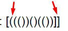

Task 1: Составить алгоритм: если введенное число больше 7, то вывести “Привет”.
Hello. Please, enter a number:
Task 2: Составить алгоритм: если введенное имя совпадает с Вячеслав, то вывести “Привет, Вячеслав”, если нет, то вывести "Нет такого имени".
Hello. Please, enter a name:
Task 3: Составить алгоритм: на входе есть числовой массив, необходимо вывести элементы массива кратные 3.
Введите элементы числового массива через пробел:
Task 3: Дана скобочная последовательность: [((())()(())]]
- Можно ли считать эту последовательность правильной?
- Если ответ на предыдущий вопрос “нет” - то что необходимо в ней изменить, чтоб она стала правильной?
Нет, последовательность неверная. Вариантов как сделать из такой неправильной последоватеьности правильную - очень много.
Самые очевидные и простые: удалить скобки отмеченные красными стрелками ниже или добавить по одной парной соответствующей скобке.
Экземпляры правильной последовательности:
[(())()(())]
[[((())()(()))]]